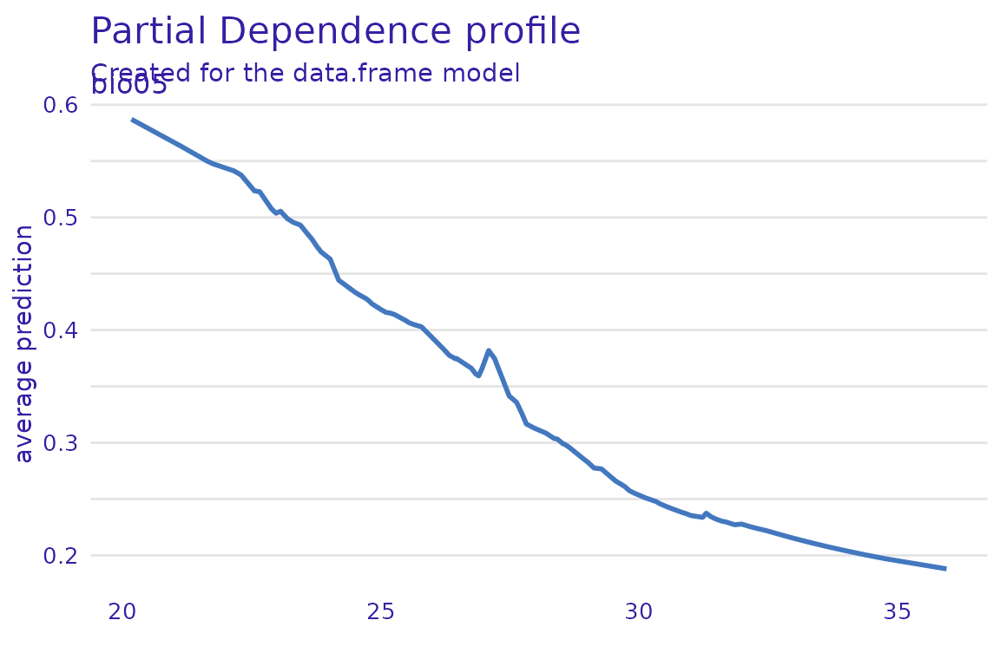
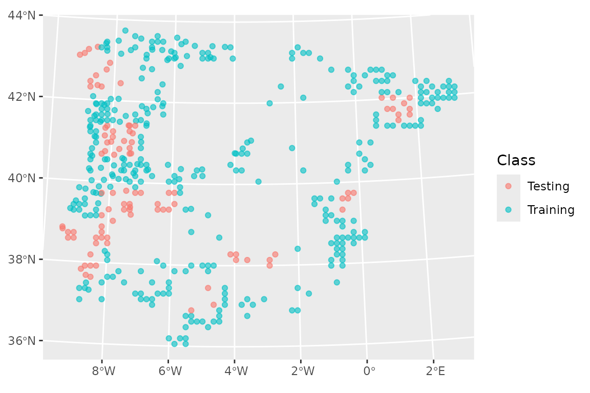
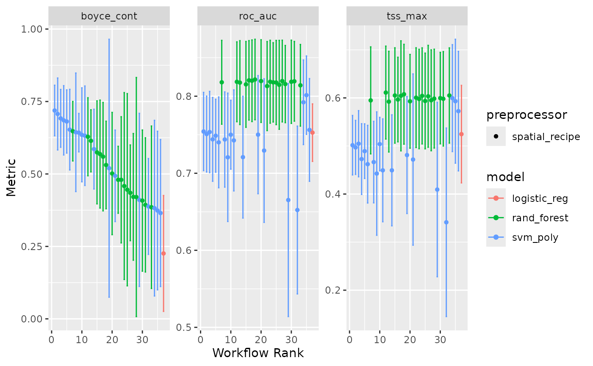

Examples of additional tidymodels features
Source:vignettes/a2_tidymodels_additions.Rmd
a2_tidymodels_additions.RmdIn this vignette, we illustrate how a number of features from
tidymodels can be used to enhance a conventional SDM
pipeline. We recommend users first become familiar with
tidymodels; there are a number of excellent tutorials (both
introductory and advanced) on its dedicated website We reuse the example on
the Iberian lizard that we used in the tidysdm
overview article.
Exploring models with DALEX
An issue with machine learning algorithms is that it is not easy to
understand the role of different variables in giving the final
prediction. A number of packages have been created to explore and
explain the behaviour of ML algorithms, such as those used in
tidysdm. In the tidysdm
overview article, we illustrated how to use recipes to
create profiles.
Here we demonstrate how to use DALEX, an excellent
package that has methods to deal with tidymodels.
tidysdm contains additional functions that allow use to use
the DALEX functions directly on tidysdm ensembles.
We will use a simple ensemble that we built in the overview vignette.
library(tidysdm)
#> Loading required package: tidymodels
#> ── Attaching packages ────────────────────────────────────── tidymodels 1.2.0 ──
#> ✔ broom 1.0.7 ✔ recipes 1.1.0
#> ✔ dials 1.3.0 ✔ rsample 1.2.1
#> ✔ dplyr 1.1.4 ✔ tibble 3.2.1
#> ✔ ggplot2 3.5.1 ✔ tidyr 1.3.1
#> ✔ infer 1.0.7 ✔ tune 1.2.1
#> ✔ modeldata 1.4.0 ✔ workflows 1.1.4
#> ✔ parsnip 1.2.1 ✔ workflowsets 1.1.0
#> ✔ purrr 1.0.2 ✔ yardstick 1.3.1
#> ── Conflicts ───────────────────────────────────────── tidymodels_conflicts() ──
#> ✖ purrr::discard() masks scales::discard()
#> ✖ dplyr::filter() masks stats::filter()
#> ✖ dplyr::lag() masks stats::lag()
#> ✖ recipes::step() masks stats::step()
#> • Search for functions across packages at https://www.tidymodels.org/find/
#> Loading required package: spatialsample
lacerta_ensemble
#> A simple_ensemble of models
#>
#> Members:
#> • default_glm
#> • default_rf
#> • default_gbm
#> • default_maxent
#>
#> Available metrics:
#> • boyce_cont
#> • roc_auc
#> • tss_max
#>
#> Metric used to tune workflows:
#> • boyce_contThe first step in DALEX is to create an explainer object, which can
then be queried by different functions in the package, to turn the
explainer into an explanation (following the DALEX lingo). As a first
step, we use the custom function explain_tidysdm to
generate our explainer:
explainer_lacerta_ens <- explain_tidysdm(lacerta_ensemble)
#> Preparation of a new explainer is initiated
#> -> model label : data.frame ( default )
#> -> data : 444 rows 4 cols
#> -> data : tibble converted into a data.frame
#> -> target variable : 444 values
#> -> predict function : predict_function
#> -> predicted values : No value for predict function target column. ( default )
#> -> model_info : package tidysdm , ver. 0.9.6.9002 , task classification ( default )
#> -> model_info : type set to classification
#> -> predicted values : numerical, min = 0.01490969 , mean = 0.2861937 , max = 0.7169324
#> -> residual function : difference between y and yhat ( default )
#> -> residuals : numerical, min = -0.6465921 , mean = -0.03619367 , max = 0.7891973
#> A new explainer has been created!Now that we have our explainer, we can explore variable importance for the ensemble:
library(DALEX)
#> Welcome to DALEX (version: 2.4.3).
#> Find examples and detailed introduction at: http://ema.drwhy.ai/
#> Additional features will be available after installation of: ggpubr.
#> Use 'install_dependencies()' to get all suggested dependencies
#>
#> Attaching package: 'DALEX'
#> The following object is masked from 'package:dplyr':
#>
#> explain
vip_ensemble <- model_parts(explainer = explainer_lacerta_ens)
plot(vip_ensemble)
Or generate partial dependency plots for a given variable (e.g. bio05):
pdp_bio05 <- model_profile(explainer_lacerta_ens, N = 500, variables = "bio05")
plot(pdp_bio05)
There are many other functions in DALEX that can be applied to the explainer to further explore the behaviour of the model; see several tutorial on https://modeloriented.github.io/DALEX/
It is also possible to explore the individual models that make up the ensemble:
explainer_list <- explain_tidysdm(tidysdm::lacerta_ensemble, by_workflow = TRUE)
#> Preparation of a new explainer is initiated
#> -> model label : default_glm
#> -> data : 444 rows 4 cols
#> -> data : tibble converted into a data.frame
#> -> target variable : 444 values
#> -> predict function : yhat.workflow will be used ( default )
#> -> predicted values : No value for predict function target column. ( default )
#> -> model_info : package tidymodels , ver. 1.2.0 , task classification ( default )
#> -> model_info : type set to classification
#> -> predicted values : numerical, min = 0.2280177 , mean = 0.75 , max = 0.9854359
#> -> residual function : difference between y and yhat ( default )
#> -> residuals : numerical, min = -0.9096205 , mean = 5.395921e-12 , max = 0.7719823
#> A new explainer has been created!
#> Preparation of a new explainer is initiated
#> -> model label : default_rf
#> -> data : 444 rows 4 cols
#> -> data : tibble converted into a data.frame
#> -> target variable : 444 values
#> -> predict function : yhat.workflow will be used ( default )
#> -> predicted values : No value for predict function target column. ( default )
#> -> model_info : package tidymodels , ver. 1.2.0 , task classification ( default )
#> -> model_info : type set to classification
#> -> predicted values : numerical, min = 0.1315421 , mean = 0.7480648 , max = 1
#> -> residual function : difference between y and yhat ( default )
#> -> residuals : numerical, min = -0.6878921 , mean = 0.001935171 , max = 0.5870619
#> A new explainer has been created!
#> Preparation of a new explainer is initiated
#> -> model label : default_gbm
#> -> data : 444 rows 4 cols
#> -> data : tibble converted into a data.frame
#> -> target variable : 444 values
#> -> predict function : yhat.workflow will be used ( default )
#> -> predicted values : No value for predict function target column. ( default )
#> -> model_info : package tidymodels , ver. 1.2.0 , task classification ( default )
#> -> model_info : type set to classification
#> -> predicted values : numerical, min = 0.3390188 , mean = 0.7314788 , max = 0.9632964
#> -> residual function : difference between y and yhat ( default )
#> -> residuals : numerical, min = -0.9268645 , mean = 0.01852121 , max = 0.6280424
#> A new explainer has been created!
#> Preparation of a new explainer is initiated
#> -> model label : default_maxent
#> -> data : 444 rows 4 cols
#> -> data : tibble converted into a data.frame
#> -> target variable : 444 values
#> -> predict function : yhat.workflow will be used ( default )
#> -> predicted values : No value for predict function target column. ( default )
#> -> model_info : package tidymodels , ver. 1.2.0 , task classification ( default )
#> -> model_info : type set to classification
#> -> predicted values : numerical, min = 0.1095764 , mean = 0.6256817 , max = 0.9960248
#> -> residual function : difference between y and yhat ( default )
#> -> residuals : numerical, min = -0.8207859 , mean = 0.1243183 , max = 0.8904236
#> A new explainer has been created!The resulting list can be then used to build lists of explanations, which can then be plotted.
profile_list <- lapply(explainer_list, model_profile,
N = 500,
variables = "bio05"
)
plot(profile_list)
The initial split
The standard approach in tidymodels is to make an
initial split of the data into a test and a training set. We will use
retain 20% of the data (1/5) for the testing set, and use the rest for
training.
We start by loading a set of presences and absences and their
associated climate, analogous to the one that we generated in the tidysdm
overview article:
library(tidysdm)
library(sf)
#> Linking to GEOS 3.10.2, GDAL 3.4.1, PROJ 8.2.1; sf_use_s2() is TRUE
lacerta_thin <- readRDS(system.file("extdata/lacerta_climate_sf.RDS",
package = "tidysdm"
))We then use spatial_initial_split to do the split, using
a spatial_block_cv scheme to partition the data:
set.seed(1005)
lacerta_initial <- spatial_initial_split(lacerta_thin,
prop = 1 / 5, spatial_block_cv
)
autoplot(lacerta_initial)
And check the balance of presences vs pseudoabsences:
check_splits_balance(lacerta_initial, class)
#> # A tibble: 1 × 4
#> presence_test pseudoabs_test presence_train pseudoabs_train
#> <int> <int> <int> <int>
#> 1 88 267 25 72We can now extract the training set from our
lacerta_initial split, and sample folds to set up cross
validation (note that we set the cellsize and
offset based on the full dataset,
lacerta_thin; this allows us to use the same grid we used
for the initial_split).
set.seed(1005)
lacerta_training <- training(lacerta_initial)
lacerta_cv <- spatial_block_cv(lacerta_training,
v = 5,
cellsize = grid_cellsize(lacerta_thin),
offset = grid_offset(lacerta_thin)
)
autoplot(lacerta_cv)
And check the balance in the dataset:
check_splits_balance(lacerta_cv, class)
#> # A tibble: 5 × 4
#> presence_assessment pseudoabs_assessment presence_analysis pseudoabs_analysis
#> <int> <int> <int> <int>
#> 1 74 197 14 70
#> 2 59 225 29 42
#> 3 73 220 15 47
#> 4 76 209 12 58
#> 5 70 218 18 49Different recipes for certain models
Only certain type of models (e.g. glm, svm) struggle with correlated variables; other algorithms, such as random forests, can handle correlated variables. So, we will create two recipes, one with all variables, and one only with the variables that are uncorrelated:
lacerta_rec_all <- recipe(lacerta_thin, formula = class ~ .)
lacerta_rec_uncor <- lacerta_rec_all %>%
step_rm(all_of(c(
"bio01", "bio02", "bio03", "bio04", "bio07", "bio08",
"bio09", "bio10", "bio11", "bio12", "bio14", "bio16",
"bio17", "bio18", "bio19", "altitude"
)))
lacerta_rec_uncor
#>
#> ── Recipe ──────────────────────────────────────────────────────────────────────
#>
#> ── Inputs
#> Number of variables by role
#> outcome: 1
#> predictor: 20
#> coords: 2
#>
#> ── Operations
#> • Variables removed: all_of(c("bio01", "bio02", "bio03", "bio04", "bio07",
#> "bio08", "bio09", "bio10", "bio11", "bio12", "bio14", "bio16", "bio17",
#> "bio18", "bio19", "altitude"))And now use these two recipes in a workflowset (we will
keep it small for computational time), selecting the appropriate recipe
for each model. We will include a model (polynomial support vector
machines, or SVM) which does not have a wrapper in tidysdm
for creating a model specification. However, we can use a standard model
spec from yardstick:
lacerta_models <-
# create the workflow_set
workflow_set(
preproc = list(
uncor = lacerta_rec_uncor, # recipe for the glm
all = lacerta_rec_all, # recipe for the random forest
all = lacerta_rec_uncor # recipe for svm
),
models = list(
# the standard glm specs
glm = sdm_spec_glm(),
# rf specs with tuning
rf = sdm_spec_rf(),
# svm specs with tuning
svm = parsnip::svm_poly(
cost = tune(),
degree = tune()
) %>%
parsnip::set_engine("kernlab") %>%
parsnip::set_mode("classification")
),
# make all combinations of preproc and models,
cross = FALSE
) %>%
# tweak controls to store information needed later to create the ensemble
# note that we use the bayes version as we will use a Bayes search (see later)
option_add(control = stacks::control_stack_bayes())We can now use the block CV folds to tune and assess the models. Note
that there are multiple tuning approaches, besides the standard grid
method. Here we will use tune_bayes from the
tune package (see its help page to see how a Gaussian
Process model is used to choose parameter combinations).
This tuning method (as opposed to use a standard grid) does not allow
for hyper-parameters with unknown limits, but mtry for
random forest is undefined as its upper range depends on the number of
variables in the dataset. So, before tuning, we need to finalise
mtry by informing the set dials with the actual data:
rf_param <- lacerta_models %>%
# extract the rf workflow
extract_workflow("all_rf") %>%
# extract its parameters dials (used to tune)
extract_parameter_set_dials() %>%
# give it the predictors to finalize mtry
finalize(x = st_drop_geometry(lacerta_thin) %>% select(-class))
# now update the workflowset with the new parameter info
lacerta_models <- lacerta_models %>%
option_add(param_info = rf_param, id = "all_rf")And now we can tune the models:
set.seed(1234567)
lacerta_models <-
lacerta_models %>%
workflow_map("tune_bayes",
resamples = lacerta_cv, initial = 8,
metrics = sdm_metric_set(), verbose = TRUE
)
#> i No tuning parameters. `fit_resamples()` will be attempted
#> i 1 of 3 resampling: uncor_glm
#> ✔ 1 of 3 resampling: uncor_glm (398ms)
#> i 2 of 3 tuning: all_rf
#> ! No improvement for 10 iterations; returning current results.
#> ✔ 2 of 3 tuning: all_rf (16.8s)
#> i 3 of 3 tuning: all_svm
#> ✔ 3 of 3 tuning: all_svm (21.3s)We can have a look at the performance of our models with:
autoplot(lacerta_models)
Stack ensembles
Instead of building a simple ensemble with the best version of each
model type, we can build a stack ensemble, as implemented in the package
stacks. Stacking uses a meta-learning algorithm to learn
how to best combine multiple models, including multiple versions of the
same algorithm with different hyper-parameters.
library(stacks)
set.seed(1005)
lacerta_stack <-
# initialize the stack
stacks() %>%
# add candidate members
add_candidates(lacerta_models) %>%
# determine how to combine their predictions
blend_predictions() %>%
# fit the candidates with non-zero weights (i.e.non-zero stacking coefficients)
fit_members()
autoplot(lacerta_stack, type = "weights")
We can see that three versions of the SVM and one of the random forests were selected; the stacking coefficients give an indication of the weight each model carries within the ensemble. We can now use the ensemble to make predictions about the testing data:
lacerta_testing <- testing(lacerta_initial)
lacerta_test_pred <-
lacerta_testing %>%
bind_cols(predict(lacerta_stack, ., type = "prob"))And look at the goodness of fit using some commonly used sdm metrics.
Note that sdm_metric_set is first invoked to generate a
function (with empty ()) that is then used on the data.
sdm_metric_set()(data = lacerta_test_pred, truth = class, .pred_presence)
#> # A tibble: 3 × 3
#> .metric .estimator .estimate
#> <chr> <chr> <dbl>
#> 1 boyce_cont binary 0.853
#> 2 roc_auc binary 0.986
#> 3 tss_max binary 0.92We can now make predictions with this stacked ensemble. We start by extracting the climate for the variables of interest
download_dataset("WorldClim_2.1_10m")
climate_vars <- lacerta_rec_all$var_info %>%
filter(role == "predictor") %>%
pull(variable)
climate_present <- pastclim::region_slice(
time_ce = 1985,
bio_variables = climate_vars,
data = "WorldClim_2.1_10m",
crop = iberia_poly
)
prediction_present <- predict_raster(lacerta_stack, climate_present,
type = "prob"
)
library(tidyterra)
#>
#> Attaching package: 'tidyterra'
#> The following object is masked from 'package:stats':
#>
#> filter
ggplot() +
geom_spatraster(data = prediction_present, aes(fill = .pred_presence)) +
scale_fill_terrain_c() +
# plot presences used in the model
geom_sf(data = lacerta_thin %>% filter(class == "presence"))
Using multi-level factors as predictors
Most machine learning algorithms do not natively use multilevel
factors as predictors. The solution is to create dummy variables, which
are binary variables that represent the levels of the factor. In
tidymodels, this is done using the step_dummy
function.
Let’s create a factor variable with 3 levels based on altitude.
library(tidysdm)
# load the dataset
lacerta_thin <- readRDS(system.file("extdata/lacerta_climate_sf.RDS",
package = "tidysdm"
))
# create a topography variable with 3 levels based on altitude
lacerta_thin$topography <- cut(lacerta_thin$altitude,
breaks = c(-Inf, 200, 800, Inf),
labels = c("plains", "hills", "mountains"))
table(lacerta_thin$topography)
#>
#> plains hills mountains
#> 82 233 137We then create the recipe by adding a step to create dummy variables
for the topography variable.
# subset to variable of interest
lacerta_thin <- lacerta_thin %>% select(class, bio05, bio06, bio12, bio15, topography)
lacerta_rec <- recipe(lacerta_thin, formula = class ~ .) %>%
step_dummy(topography)
lacerta_rec
#>
#> ── Recipe ──────────────────────────────────────────────────────────────────────
#>
#> ── Inputs
#> Number of variables by role
#> outcome: 1
#> predictor: 5
#> coords: 2
#>
#> ── Operations
#> • Dummy variables from: topographyLet’s us see what this does:
lacerta_prep <- prep(lacerta_rec)
summary(lacerta_prep)
#> # A tibble: 9 × 4
#> variable type role source
#> <chr> <list> <chr> <chr>
#> 1 bio05 <chr [2]> predictor original
#> 2 bio06 <chr [2]> predictor original
#> 3 bio12 <chr [2]> predictor original
#> 4 bio15 <chr [2]> predictor original
#> 5 X <chr [2]> coords original
#> 6 Y <chr [2]> coords original
#> 7 class <chr [3]> outcome original
#> 8 topography_hills <chr [2]> predictor derived
#> 9 topography_mountains <chr [2]> predictor derivedWe have added two “derived” variables, topography_hills and topography_mountains, which are binary variables that allow us to code topography (with plains being used as the reference level, which is coded by both hills and mountains being 0 for a given location). We can look at the first few rows of the data to see the new variables by baking the recipe:
lacerta_bake <- bake(lacerta_prep, new_data = lacerta_thin)
glimpse(lacerta_bake)
#> Rows: 452
#> Columns: 9
#> $ bio05 <dbl> 30.50350, 25.28050, 23.67800, 29.68875, 26.34075,…
#> $ bio06 <dbl> 1.477000, 3.631750, 0.789500, 6.048750, 1.869000,…
#> $ bio12 <dbl> 596, 1490, 1395, 729, 1324, 1409, 1260, 1390, 116…
#> $ bio15 <dbl> 50.59533, 50.07437, 47.24211, 58.88199, 51.62960,…
#> $ X <dbl> -5.394226, -8.374844, -7.886102, -8.231414, -7.17…
#> $ Y <dbl> 39.48495, 41.97207, 41.89992, 39.49710, 41.78401,…
#> $ class <fct> presence, presence, presence, presence, presence,…
#> $ topography_hills <dbl> 1, 1, 0, 0, 1, 1, 1, 1, 1, 0, 0, 1, 1, 1, 1, 0, 0…
#> $ topography_mountains <dbl> 0, 0, 1, 0, 0, 0, 0, 0, 0, 0, 1, 0, 0, 0, 0, 0, 1…We can now run the sdm as usual:
# define the models
lacerta_models <-
# create the workflow_set
workflow_set(
preproc = list(default = lacerta_rec),
models = list(
# the standard glm specs
glm = sdm_spec_glm(),
# rf specs with tuning
rf = sdm_spec_rf()
),
# make all combinations of preproc and models,
cross = TRUE
) %>%
# tweak controls to store information needed later to create the ensemble
option_add(control = control_ensemble_grid())
# tune
set.seed(100)
lacerta_cv <- spatial_block_cv(lacerta_thin, v = 3)
lacerta_models <-
lacerta_models %>%
workflow_map("tune_grid",
resamples = lacerta_cv, grid = 3,
metrics = sdm_metric_set(), verbose = TRUE
)
#> i No tuning parameters. `fit_resamples()` will be attempted
#> i 1 of 2 resampling: default_glm
#> ✔ 1 of 2 resampling: default_glm (208ms)
#> i 2 of 2 tuning: default_rf
#> i Creating pre-processing data to finalize unknown parameter: mtry
#> ✔ 2 of 2 tuning: default_rf (1s)
# fit the ensemble
lacerta_ensemble <- simple_ensemble() %>%
add_member(lacerta_models, metric = "boyce_cont")We can now verify that the dummy variables were used by extracting the model fit from one of the models in the ensemble:
lacerta_ensemble$workflow[[1]] %>% extract_fit_parsnip()
#> parsnip model object
#>
#>
#> Call: stats::glm(formula = ..y ~ ., family = stats::binomial, data = data)
#>
#> Coefficients:
#> (Intercept) bio05 bio06
#> -6.920024 0.635493 -0.334427
#> bio12 bio15 topography_hills
#> -0.002505 -0.113106 -1.851098
#> topography_mountains
#> -2.531259
#>
#> Degrees of Freedom: 451 Total (i.e. Null); 445 Residual
#> Null Deviance: 508.4
#> Residual Deviance: 189.5 AIC: 203.5We can see that we have coefficients for topography_hills and topography_mountains.